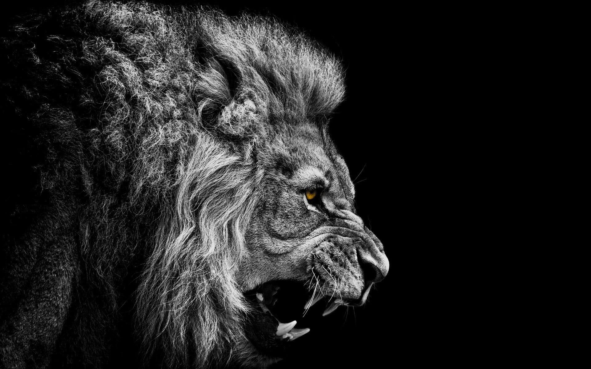

About the Lion

The lion (*Panthera leo*) is one of the most powerful and iconic big cats in the world. Known as the "King of the Jungle," lions are mainly found in Africa, with a small population in India. They live in groups called prides and are known for their strength, agility, and impressive roars.
Lions are apex predators, meaning they are at the top of the food chain. They rely on teamwork to hunt large prey such as zebras, buffaloes, and wildebeests. Despite their dominance, lions face threats from habitat loss and poaching.